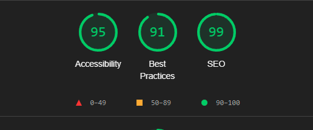
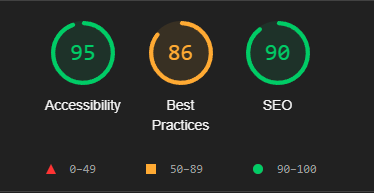
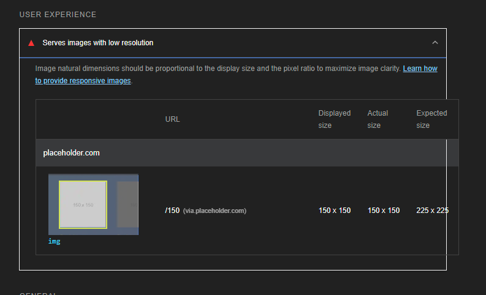
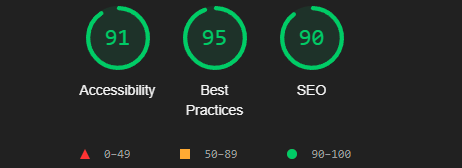
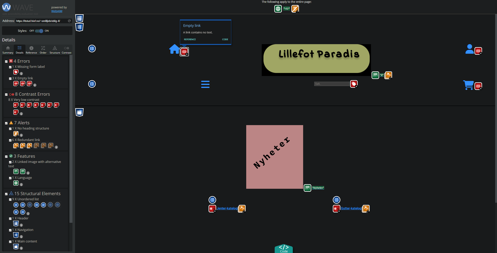
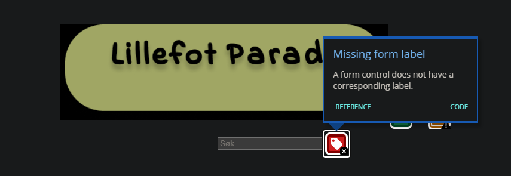
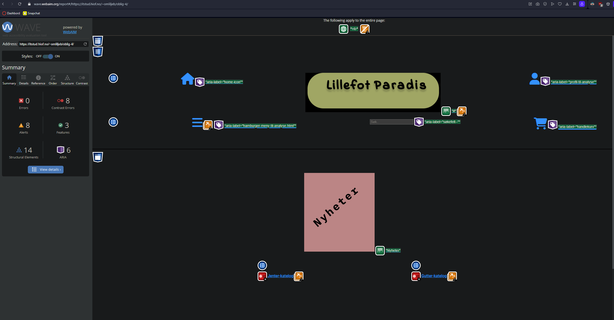
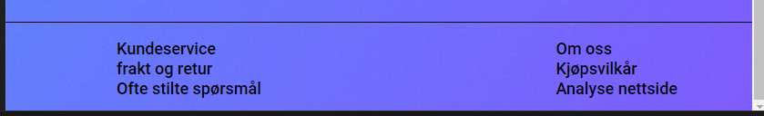
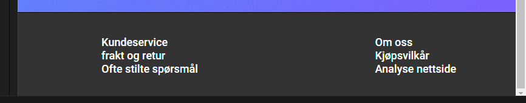
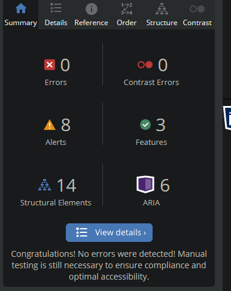

Nøkkelord som ble valgt:
skobutikk og nike
Jeg valgte disse da skobutikk er på norsk og søkemotoren vil finne resultater i Norge,
og Nike fordi det er et populært merke.google trends
skobutikk og nike
Jeg valgte disse da skobutikk er på norsk og søkemotoren vil finne resultater i Norge,
og Nike fordi det er et populært merke.Kjørte nettsiden min i lighthouse for første gang
Resultater:

Forsiden etter fiks:
Første lighthouse analyse på sortering.html:
Fikk feil på best practices da oppløsningen var for lav på bilde jeg brukte som placeholder.
Jeg ignorer denne feilen da formålet med placeholder er å kun bli brukt i demo.
Dette er første sjekk fra lighthouse:
Scoren var ganske bra så vi går videre!
Da er vi igang med Webaim:
 Klikk herFikk en del feil, men det var enkelt å rette dem. Det var kun å navngi ikonene med aria-label:
Etter fiks:
Jeg får fortsatt feil om kontrast, dette ble rettet ved å bokse rundt en solid farge slik:
Da gikk det fra slik:
til slik:
dette er resultatene fra webaim etter fiks:

{kind=link}
{kind=link}